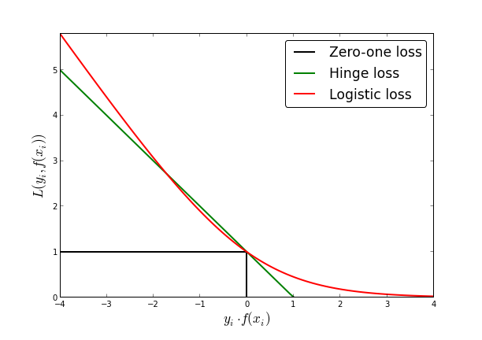
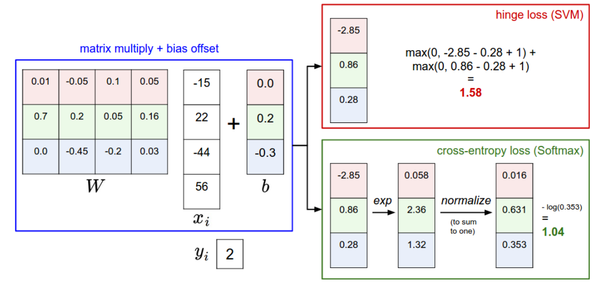

Loss Function

Frequently used loss functions
Now that we have our model fleshed out, let’s consider the loss function. Intuitively, the loss should be high if our model is not accurately classifying the training data, and low if we are doing well. There are many functions that can be used as a loss. If we’re classifying a set of mutually exclusive labels with the softmax function, then it’s common to use the cross entropy function to classify. We’ll consider that case here, though there are more problems, and more options for this problem, that can be considered. In the case of a mutually-exclusive multi-class problem, each label yi is a vector, where every element of that vector, except one, is a ‘0’. The non-zero element is a ‘1.’ The index of the ‘1’ corresponds to the class of the associated datapoint. Specifically, if a point x_i has a label y_i which looks like ,then the correct class for xiis ‘3.’ The categorical cross-entropy loss function can be expressed as
Strictly speaking, we can now minimize this function over our weights, but it is common to add some regularization term to create an objective function. We picture below an example of a loss function pipeline.
